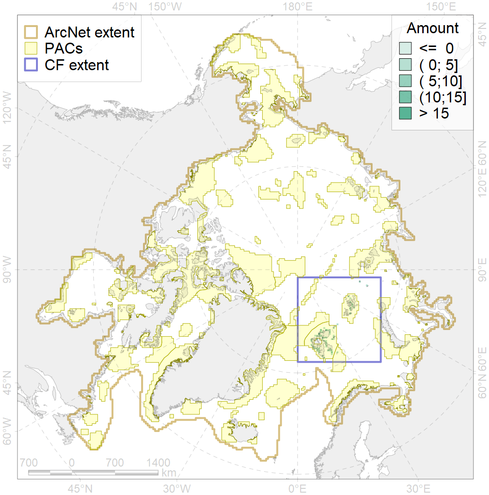
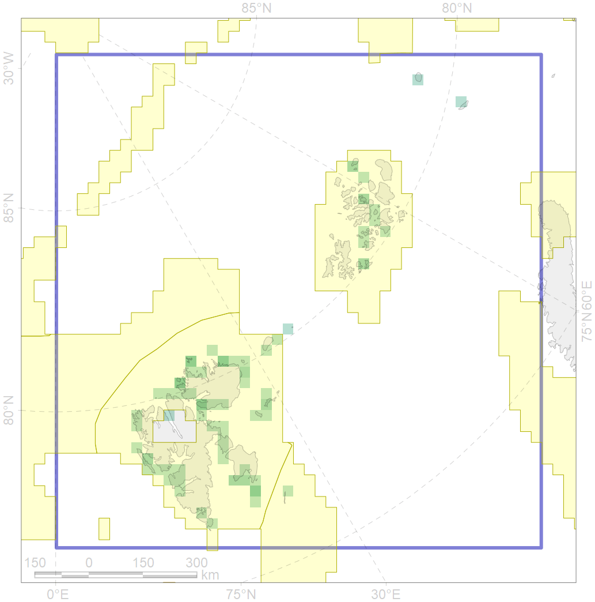

1008

| CF ID | 1008 |
| CF Name | Atlantic Walrus haulouts in Spitsbergen and FJL region |
| Time Period | 2006-2012 |
| Source(s) | http://citeseerx.ist.psu.edu/viewdoc/download?doi=10.1.1.533.1537&rep=rep1&type=pdf https://svalbardkartet.npolar.no/Html5Svb/index.html?viewer=Svalbardkartet&viewer=Svalbardkartet |
| Seasonality | June-August |
| Depth Horizon | > 0m |
| Methodology | Manual aerial imagery interpretation, Data assembled from multiple datasets |
| Author Name | Maria Solovyeva |
| Notes | |
| Conservation Target Set in the Scenario | 0.828 |
| Conservation Target Achieved in the Scenario | 0.956 (Scenario: 115.5%) |
| PAC ID | Proportion in the PAC | Contribution to ArcNet Target Achievement | PAC’s Contribution to the Achieved Target |
|---|---|---|---|
| 22 | 18.0% | 21.8% | 18.8% |
| 30 | 76.5% | 92.3% | 79.9% |
| 31 | 0.4% | 0.4% | 0.4% |
| inner | 94.9% | 114.5% | 99.2% |
| outer | 5.1% | 1.0% | 0.8% |